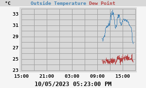
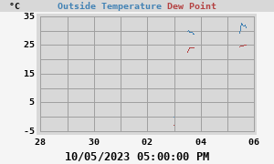

Outside Temperature
24h Outside Temperature

- Today's min: 27.7°C at 05:22:59 PM
- Today's max: 33.8°C at 12:30:38 PM
7-day Outside Temperature

- This week's min: -0.2°C at 11:39:59 PM (Monday)
- This week's max: 33.8°C at 12:30:38 PM (Thursday)
WeeWX v4.10.2